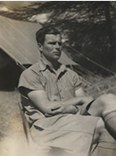
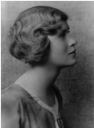

Through an acquaintance with Louis S B Leakey, research fellow at St John's College, Vivian Fuchs was introduced to Dr Barton Worthington and on the recommendation of his tutor, James Wordie, was recruited as geologist to the 1930 - 31 Cambridge Expedition to the East African Lakes. The objective was to study the biology and geology of the lakes in the Great African Rift Valley.
Often working alone, Fuchs quickly grew acclimatised to the harsh conditions and was just as captivated by the vast, hot continent as he had been by the Arctic pack ice. After Lake Baringo in Kenya, the expedition moved on to Lake Rudolf (now Lake Turkana) in northern Kenya, using vehicles and camels to transport men and equipment. On return to Baringo Fuchs became seriously ill with malaira, and was hospitalised in Nairobi for two months before he rejoined the expedition. In western Uganda, he travelled into what is now Zaïre and spent a month studying Lake George.
In 1931 Fuchs joined Louis Leakey on an archaeological expedition to Olduvai in Tanzania, finding stone-age tools and mammal fossils which were sent to the Natural History collection at the British Museum.
In 1933 Fuchs married his cousin, Joyce Connell. A world traveller in her own right, Joyce accompanied Vivian on his expedition to Lake Rudolf (now Lake Turkana) in 1934. Plans were submitted to the Royal Society, Royal Geographical Society and other funding bodies, to raise the £2000 necessary to sustain six men for a year on the expedition.
 In
Kenya, west of Lake Turkana, they collected the first pre-Neolithic implements
found in the lake basin, then travelled north to the frontier with Sudan.
Returning to Naivasha, the expedition re-fitted for the second part and
set out for Lake Turkana to resume geological and survey work. Here they
made the first recorded visit to South Island and found signs of human occupation.
When Fuchs returned to the mainland to continue his geological work, disaster
struck and his two companions were lost. After intensive
searches for more than eight days the search had to be called off.
In
Kenya, west of Lake Turkana, they collected the first pre-Neolithic implements
found in the lake basin, then travelled north to the frontier with Sudan.
Returning to Naivasha, the expedition re-fitted for the second part and
set out for Lake Turkana to resume geological and survey work. Here they
made the first recorded visit to South Island and found signs of human occupation.
When Fuchs returned to the mainland to continue his geological work, disaster
struck and his two companions were lost. After intensive
searches for more than eight days the search had to be called off.
Although Fuchs's first expedition had ended earlier than planned in tragic circumstances, the scientific work was not lost and led to his PhD.
In 1935 Joyce and Vivian Fuchs bought their first home, at 72 Barton Road in Cambridge. In February 1936, their daughter Hilary was born. The following year they bought the house known as Barton Cottage, 79 Barton Road and the next door plot 76 Barton Road (undeveloped). Barton Cottage was later sold and the house and garden eventually acquired by Wolfson College.
After writing up his PhD at the Sedgwick Museum (now Department of Earth Sciences) at the University of Cambridge, Fuchs organised an expedition to investigate the Lake Rukwa basin in southern Tanzania in 1937. Sadly, when he returned in 1938 to a new daughter, Rosalind, she was diagnosed with severe cerebral palsy, with tragic consequences for the family. Rosalind died aged almost eight.